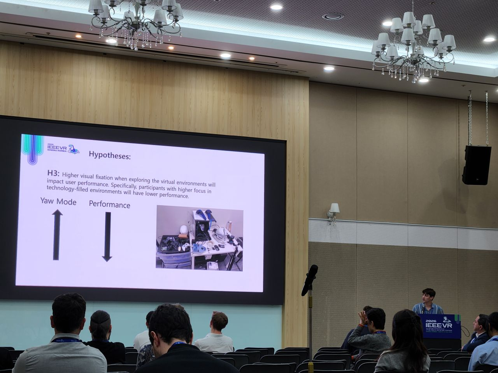
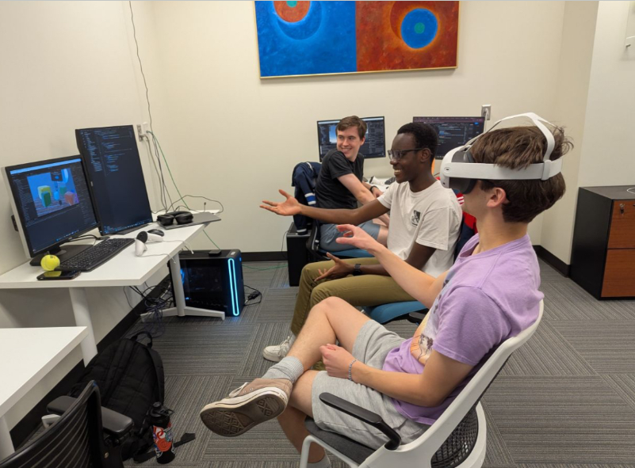

Clean Up Your Lab: The Impact of Technology Clutter and Replica Environments on Cognitive Performance
This study examined how technology clutter and differences between physical and virtual laboratory environments can affect cognitive performance.
Human-Computer Interaction · Virtual Reality · Behavioral Research
My research in Virtual Reality explores how changes in virtual and mixed-reality environments can impact participant cognition and attention. I've gained skills in experimental design, environment development, and behavioral data analysis to study how environmental and technological factors affect cognition, head movement, and performance.


Over the past two years, I've worked in Dr. Tabitha Peck's Human-Computer Interaction Lab and Extended Reality Lab. I design and develop controlled virtual and mixed-reality experiments using Unity and C#. I received a Davidson Research Initiative Grant to support my research, and received a Dean Rusk International Travel grant to run a study at the Institute of Science Tokyo in Japan.
Across multiple studies, I have worked with data from more than 200 participants and investigated how environmental design, visual clutter, and immersive technology can influence attention and cognitive performance.
This study examined how technology clutter and differences between physical and virtual laboratory environments can affect cognitive performance.
This work investigated whether the design of immersive environments can introduce unintended bias into studies of working memory.
This project examines whether responses to environmental clutter differ across cultural contexts and immersive technologies. Currently working on manuscript for submission.
My honors thesis brought together my research on environmental design, technological clutter, and cognition across physical and immersive environments. My thesis received High Honors and the Frontis W. Johnston Award from the Davidson College Center for Interdisplinary Studies (CIS).
Presented “Clean Up Your Lab: The Impact of Technology Clutter and Replica Environments on Cognitive Performance”
Presented “The Impact of Environment Design Bias on Working Memory”
Presented “A Machine Learning Approach to Predicting Video Game Character Demographics Based on Stat Attributes,” an interdisciplinary project using a scraped dataset and classification models to examine representation in video games.
Controlled studies, participant protocols, variable selection, and behavioral measurement.
Virtual and mixed-reality experiment development using Unity and C#.
Data cleaning, statistical testing, visualization, and analysis of behavioral data in R.
Academic writing, peer-reviewed publications, conference talks, and interdisciplinary collaboration.